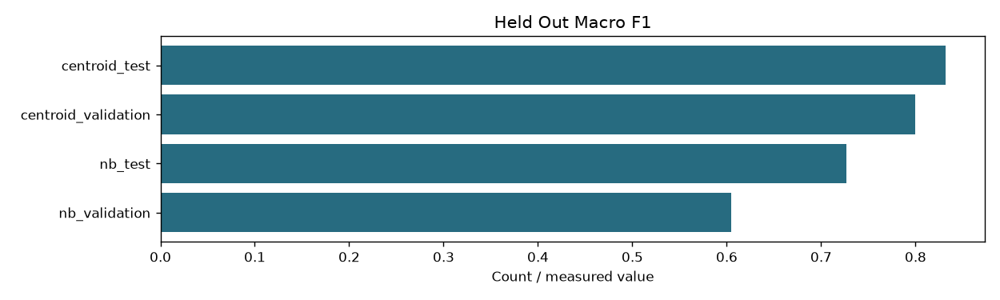

| index_fingerprint | 4217438d8fd32410fd22acf441c1c5403837c0fbb26a0f85edbdf1633eae0790 |
|---|---|
| classes | ['C01', 'C02', 'C03', 'C04', 'C05', 'C06', 'C07', 'C08', 'C09', 'C10', 'C11', 'C12', 'C13', 'C14'] |
| class_names | {'C01': 'cloud-platforms', 'C02': 'ai-ml-compute', 'C03': 'mlops-orchestration', 'C04': 'programming-languages', 'C05': 'databases-storage', 'C06': 'search-engines', 'C07': 'messaging-rpc', 'C08': 'distributed-data-processing', 'C09': 'application-frameworks', 'C10': 'containers-orchestration', 'C11': 'devops-build-release', 'C12': 'os-networking-web', 'C13': 'security-identity', 'C14': 'observability'} |
| training_csv_sha256 | e9ff13c8df76535b2838baa4139264dfe1abd5a37583331bbba731a2409203bf |
| vocabulary_size | 8147 |
| training_documents | 280 |
| nb | Multinomial token counts, training-only vocabulary with df>=2, add-one smoothing and empirical class priors |
| centroid | Mean of normalized training-document vectors; each document averages all pure-zone windows |
| input_policy | Original source text only; no added technology/class/URL metadata |
| label_scope | Source-domain classification; held-out scores do not validate semantic relevance or short-query routing |
| results | {'nb': {'validation': {'accuracy': 0.6142857142857143, 'macro_f1': 0.6046306867735439, 'per_class_f1': [0.3333333333333333, 0.75, 0.6666666666666666, 0.5454545454545454, 0.25, 0.8888888888888888, 0.7142857142857143, 0.6666666666666666, 0.7692307692307693, 0.5, 0.36363636363636365, 0.6, 0.75, 0.6666666666666666], 'confusion': [[1, 0, 0, 0, 0, 0, 0, 0, 1, 1, 1, 0, 0, 1], [0, 3, 1, 1, 0, 0, 0, 0, 0, 0, 0, 0, 0, 0], [0, 0, 3, 0, 0, 0, 0, 0, 0, 1, 0, 0, 0, 1], [0, 0, 0, 3, 0, 0, 0, 0, 1, 0, 1, 0, 0, 0], [0, 0, 0, 0, 1, 0, 1, 1, 1, 1, 0, 0, 0, 0], [0, 0, 0, 0, 0, 4, 0, 0, 0, 0, 1, 0, 0, 0], [0, 0, 0, 0, 0, 0, 5, 0, 0, 0, 0, 0, 0, 0], [0, 0, 0, 1, 1, 0, 0, 3, 0, 0, 0, 0, 0, 0], [0, 0, 0, 0, 0, 0, 0, 0, 5, 0, 0, 0, 0, 0], [0, 0, 0, 0, 0, 0, 0, 0, 0, 3, 1, 1, 0, 0], [0, 0, 0, 1, 0, 0, 1, 0, 0, 1, 2, 0, 0, 0], [0, 0, 0, 0, 0, 0, 1, 0, 0, 0, 0, 3, 0, 1], [0, 0, 0, 0, 1, 0, 0, 0, 0, 0, 0, 1, 3, 0], [0, 0, 0, 0, 0, 0, 1, 0, 0, 0, 0, 0, 0, 4]], 'documents': 70}, 'test': {'accuracy': 0.7428571428571429, 'macro_f1': 0.7265203050917337, 'per_class_f1': [0.3333333333333333, 0.8888888888888888, 0.8888888888888888, 0.7142857142857143, 0.5714285714285714, 0.6, 0.7272727272727273, 0.9090909090909091, 0.8333333333333334, 1.0, 0.8, 0.6666666666666666, 0.5714285714285714, 0.6666666666666666], 'confusion': [[1, 0, 0, 0, 0, 1, 0, 0, 0, 0, 1, 0, 0, 2], [0, 4, 0, 1, 0, 0, 0, 0, 0, 0, 0, 0, 0, 0], [0, 0, 4, 0, 0, 0, 0, 0, 1, 0, 0, 0, 0, 0], [0, 0, 0, 5, 0, 0, 0, 0, 0, 0, 0, 0, 0, 0], [0, 0, 0, 1, 2, 1, 0, 0, 1, 0, 0, 0, 0, 0], [0, 0, 0, 0, 0, 3, 1, 0, 0, 0, 0, 0, 0, 1], [0, 0, 0, 0, 0, 0, 4, 1, 0, 0, 0, 0, 0, 0], [0, 0, 0, 0, 0, 0, 0, 5, 0, 0, 0, 0, 0, 0], [0, 0, 0, 0, 0, 0, 0, 0, 5, 0, 0, 0, 0, 0], [0, 0, 0, 0, 0, 0, 0, 0, 0, 5, 0, 0, 0, 0], [0, 0, 0, 0, 0, 0, 0, 0, 0, 0, 4, 0, 0, 1], [0, 0, 0, 1, 0, 0, 0, 0, 0, 0, 0, 3, 0, 1], [0, 0, 0, 1, 0, 0, 1, 0, 0, 0, 0, 1, 2, 0], [0, 0, 0, 0, 0, 0, 0, 0, 0, 0, 0, 0, 0, 5]], 'documents': 70}}, 'centroid': {'validation': {'accuracy': 0.8, 'macro_f1': 0.7996392496392496, 'per_class_f1': [0.6, 0.8888888888888888, 0.8, 0.75, 0.7272727272727273, 1.0, 0.9090909090909091, 1.0, 0.75, 0.9090909090909091, 0.6666666666666666, 0.7272727272727273, 0.6666666666666666, 0.8], 'confusion': [[3, 0, 0, 0, 0, 0, 1, 0, 0, 0, 1, 0, 0, 0], [0, 4, 1, 0, 0, 0, 0, 0, 0, 0, 0, 0, 0, 0], [0, 0, 4, 0, 0, 0, 0, 0, 0, 1, 0, 0, 0, 0], [0, 0, 0, 3, 1, 0, 0, 0, 0, 0, 1, 0, 0, 0], [0, 0, 0, 0, 4, 0, 0, 0, 0, 0, 1, 0, 0, 0], [0, 0, 0, 0, 0, 5, 0, 0, 0, 0, 0, 0, 0, 0], [0, 0, 0, 0, 0, 0, 5, 0, 0, 0, 0, 0, 0, 0], [0, 0, 0, 0, 0, 0, 0, 5, 0, 0, 0, 0, 0, 0], [0, 0, 0, 0, 1, 0, 0, 0, 3, 0, 0, 1, 0, 0], [0, 0, 0, 0, 0, 0, 0, 0, 0, 5, 0, 0, 0, 0], [0, 0, 0, 0, 0, 0, 0, 0, 0, 0, 4, 0, 1, 0], [0, 0, 0, 0, 0, 0, 0, 0, 0, 0, 0, 4, 0, 1], [1, 0, 0, 0, 0, 0, 0, 0, 0, 0, 0, 1, 3, 0], [1, 0, 0, 0, 0, 0, 0, 0, 0, 0, 0, 0, 0, 4]], 'documents': 70}, 'test': {'accuracy': 0.8428571428571429, 'macro_f1': 0.8320140177283034, 'per_class_f1': [0.6666666666666666, 0.9090909090909091, 1.0, 0.9090909090909091, 0.9090909090909091, 0.9090909090909091, 0.8, 0.8, 0.6666666666666666, 0.8888888888888888, 0.5714285714285714, 0.8, 0.9090909090909091, 0.9090909090909091], 'confusion': [[3, 0, 0, 0, 0, 0, 0, 0, 1, 0, 0, 0, 1, 0], [0, 5, 0, 0, 0, 0, 0, 0, 0, 0, 0, 0, 0, 0], [0, 0, 5, 0, 0, 0, 0, 0, 0, 0, 0, 0, 0, 0], [0, 0, 0, 5, 0, 0, 0, 0, 0, 0, 0, 0, 0, 0], [0, 0, 0, 0, 5, 0, 0, 0, 0, 0, 0, 0, 0, 0], [0, 0, 0, 0, 0, 5, 0, 0, 0, 0, 0, 0, 0, 0], [0, 0, 0, 0, 0, 0, 4, 1, 0, 0, 0, 0, 0, 0], [0, 0, 0, 0, 0, 0, 1, 4, 0, 0, 0, 0, 0, 0], [0, 0, 0, 1, 1, 0, 0, 0, 3, 0, 0, 0, 0, 0], [0, 0, 0, 0, 0, 0, 0, 0, 0, 4, 0, 1, 0, 0], [1, 0, 0, 0, 0, 1, 0, 0, 0, 0, 2, 0, 0, 1], [0, 1, 0, 0, 0, 0, 0, 0, 0, 0, 0, 4, 0, 0], [0, 0, 0, 0, 0, 0, 0, 0, 0, 0, 0, 0, 5, 0], [0, 0, 0, 0, 0, 0, 0, 0, 0, 0, 0, 0, 0, 5]], 'documents': 70}}} |
| previous_training_csv_sha256 | 3ede19858e166913d46b72e0ff23c0de8ac739e0b76ca4a58f9099a86eda967a |
| training_text_source | Full text from outputs/step_01_extraction/corpus.sqlite by doc_id |
